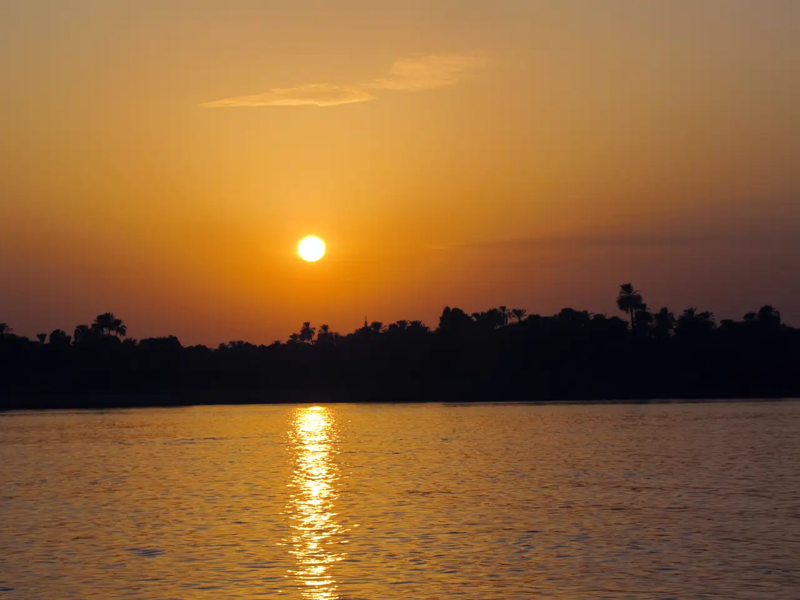
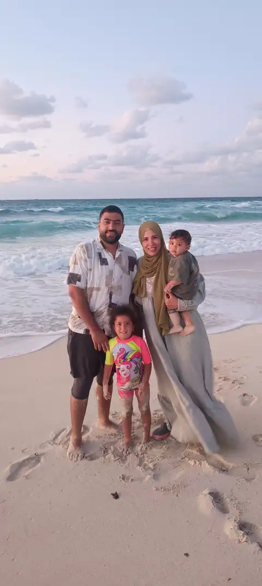
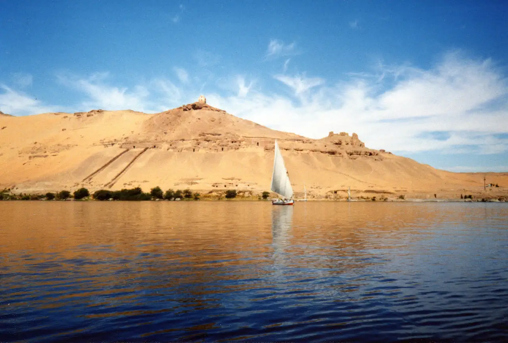
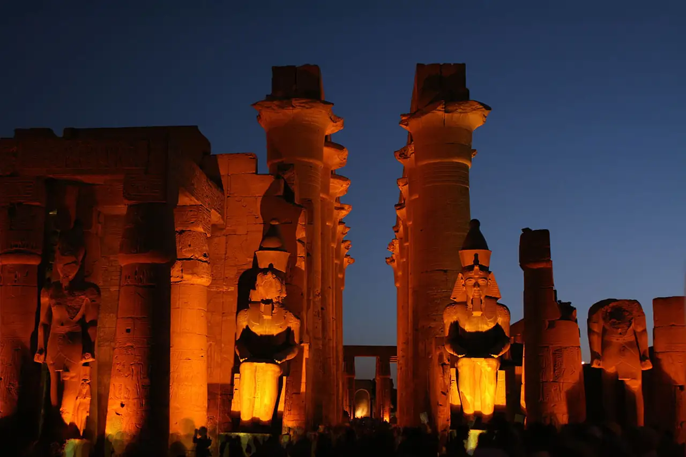
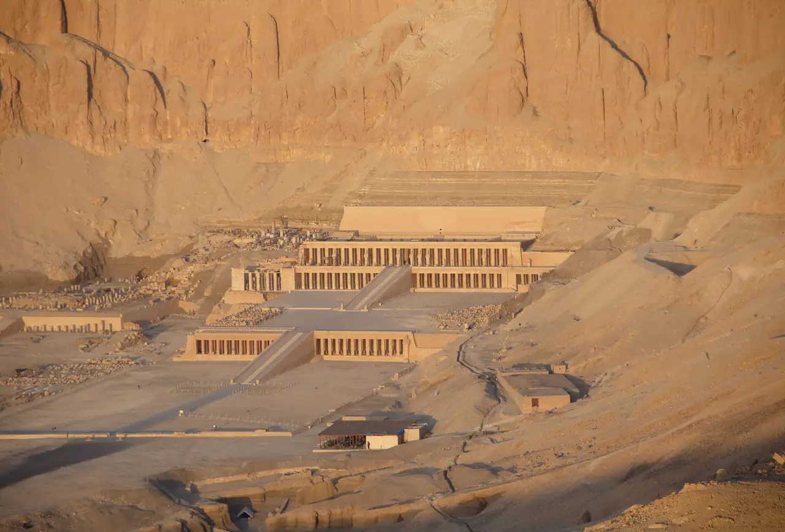
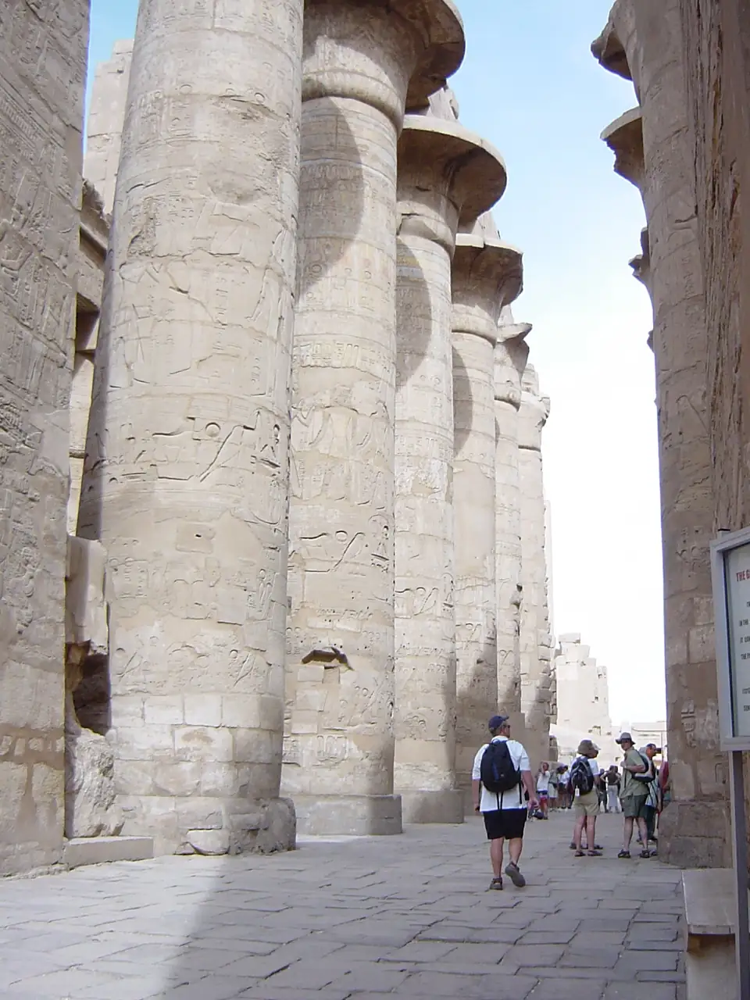
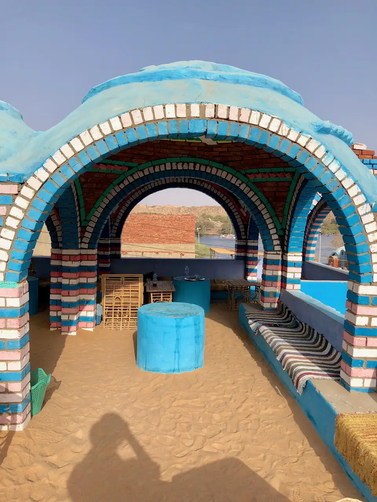

01أسوانالاثنين · 7 ديسمبر
نوصل ونسيب النيل يهدّينا
- الوصولفندق + غداء خفيف + راحة ونوم للأطفال.
- قبل الغروبفلوكة 60–90 دقيقة بين الجزر القريبة.
- المساءعشاء قريب ونوم بدري. مفيش آثار النهارده.
🌅 هادي جدًا
أسوان والأقصر · 7–11 ديسمبر 2026
كل يوم فيه خروجة رئيسية واحدة، وقت راحة ثابت للأطفال، وغروب أو منظر نيل كلما أمكن. أي نشاط مرهق يتشال من غير إحساس إن الرحلة نقصت.

رقية عندها 4 سنين، وعلي سنة، فمش هنحوّل الأقصر وأسوان لسباق مزارات. هنختار أقل عدد من الأماكن، ونسيب مساحة للنوم، والأكل، والمركب، والغروب، والوقت اللي بنقضيه سوا.

01أسوان
02أسوان
03الأقصر
04الأقصر
05الأقصراللقطة اللي عايزين نبدأ بيها الرحلة.

ألوان وبيوت وثقافة نوبية — والمركب جزء من المتعة.
المعبد والجبل كأنهم قطعة واحدة.
ختام الرحلة وسط واحد من أضخم المجمعات الدينية في مصر القديمة.
“أول حاجة مختلفة في أسوان إن النيل هنا مش منظر جانبي للمدينة؛ هو بطل المكان. إحنا قريبين من منطقة الشلال الأول التاريخية، وفي النص جزر وصخور جرانيت بتكسر مجرى النيل وتخليه أهدى وأجمل. من آلاف السنين أسوان كانت بوابة مصر للجنوب وطريق تجارة واتصال مع النوبة، فإحنا وإحنا ماشيين بالمركب بنشوف تقريبًا نفس الجغرافيا اللي خلت المكان مهم من زمان.”
خليها تدور على “جزيرة صغيرة” و“صخرة كبيرة” و“مركب شراع” — كأنها لعبة اكتشاف.
“إحنا دلوقتي على جزيرة كاملة معمولة كحديقة نباتية وسط النيل. الفكرة الحلوة إن مناخ أسوان الدافي سمح بزراعة أنواع استوائية وشبه استوائية مش بنشوفها كتير في باقي مصر. المكان مش محتاج شرح آثار؛ هو مساحة نبطّأ فيها ونشوف النخيل والأشجار والممرات، والنيل حوالينا من كل ناحية.”
اختاروا 3 ورقات مختلفة وخلوها تقول أنهي واحدة أكبر وأنهي واحدة أغرب.
“النوبة مش مجرد بيوت ملونة للسياح؛ دي ثقافة قديمة جدًا مرتبطة بالنيل جنوب مصر وشمال السودان. بناء السد العالي وتكوين بحيرة ناصر أدى لنقل مجتمعات نوبية كثيرة من قراها القديمة في الستينيات، لكن اللغة والعادات والعمارة والحرف فضلت جزء أساسي من الهوية النوبية. عشان كده وإحنا هنا نبص للمكان كقرية فيها حياة وثقافة، مش مجرد خلفية صور.”
خلوها تختار “أجمل لون بيت” وتصوره بنفسها لو ينفع.
“المعبد ده مش مبني في عهد ملك واحد. أقدم أجزاء باقية فيه ترجع لحتشبسوت، لكن قلبه الأساسي بناه أمنحتب الثالث، وبعده رمسيس الثاني عمل الصرح الكبير والفناء والتماثيل قدام المدخل. أهم حكاية هنا عيد الأوبت: مواكب دينية كانت تربط الكرنك بمعبد الأقصر، والطريق الاحتفالي اللي بين المعبدين كان جزء من المشهد.”
قولي لها: “شايفة الملك العملاق؟ مين فينا أصغر جنب رجله؟”
“إحنا في الجبانة الملكية لملوك الدولة الحديثة — خصوصًا الأسر 18 و19 و20، من حوالي 1550 لحد 1069 قبل الميلاد. اختيار الضفة الغربية مقصود: الشمس بتغرب في الغرب، فكان مرتبط بعالم الموت ثم الميلاد من جديد. كمان الوادي منعزل وفوقه قمة شكلها قريب من الهرم الطبيعي، والمقابر اتخبّت جوه الجبل بدل هرم ظاهر سهل يتسرق.”
“وأحلى حاجة وإحنا داخلين المقبرة إن الرسومات مش ديكور بس؛ دي نصوص وصور تساعد الملك في رحلة العالم الآخر وعبوره مع الشمس لحد ما يولد من جديد مع الفجر.”
بدل شرح طويل: “إحنا داخلين بيت سرّي تحت الجبل كان معمول للملك.” وخليها تدور على النجوم والطيور.
“حتشبسوت كانت ملكة ثم اتخذت لقب وصورة الفرعون الحاكم. معبدها اسمه القديم تقريبًا ‘قدس الأقداس’، وتصميمه منسوب لسننموت، أحد أهم رجال عهدها. بصّي إزاي التلات مستويات طالعين تدريجيًا والجبل وراهم عامل جزء من العمارة نفسها — ده سبب إن منظر المعبد مميز حتى قبل ما نقرب.”
“المعبد كان جنائزيًا لحتشبسوت، لكنه ضم كمان أماكن لعبادة آمون وحتحور وأنوبيس. ومن أشهر النقوش فيه رحلة بلاد بونت اللي بتعرض تجارة وبضائع وأشجار.”
“الملكة دي حكمت مصر زي الملك بالظبط.” خلوها تعدّ درجات المستويات: تحت، وسط، فوق.
“التمثالين دول للملك أمنحتب الثالث، وكانوا واقفين قدام مدخل معبده الجنائزي الضخم — معبد ملايين السنين. اللي شايفينه النهارده مجرد جزء من مجمع كان هائل، لكنه اتضرر بشدة عبر الزمن والزلازل. اسم ‘ممنون’ نفسه جه بعدين في العصور اليونانية والرومانية، مش الاسم المصري الأصلي للملك.”
دي سهلة: “مين أطول: التمثال ولا العمارة بتاعتنا؟” وبعد الصورة نكمل.
“الكرنك مش معبد واحد؛ ده مجمع ديني ضخم اتبنى واتوسع على أجيال من الملوك، وكان مركز مهم لعبادة آمون. وإحنا هنمشي مش محتاجين نفهم كل صرح وكل ملك؛ يكفينا نشوف إزاي كل حاكم كان بيضيف طبقة جديدة للمكان.”
“أهم لحظة عندنا صالة الأعمدة الكبرى: 134 عمود، والأعمدة الأكبر في المنتصف كانت بتوصل لحوالي 21 متر. الفكرة إننا نقف في النص ونبص لفوق بدل ما نجري من نقطة لنقطة. والكرنك كان متصل بمعبد الأقصر بطريق احتفالي لأبي الهول استخدم في عيد الأوبت.”
خليها تختار “أكبر عمود” وتحاول تلف دراعها حوالينه — طبعًا مش هتعرف 😄.
المعلومات التاريخية الأساسية مراجَعة على صفحات وزارة السياحة والآثار المصرية، ومعلومات جزيرة النباتات على الهيئة العامة للاستعلامات. الأسعار والمواعيد تتراجع قبل السفر لأنها قد تتغير.
inDrive عند توفره، أو تاكسي موثوق من الفندق، والاتفاق على السعر قبل التحرك.
سواق واحد لنصف يوم؛ أريح من طلب عربية لكل مزار.
موتور بوت خاص ذهاب وعودة مع الاتفاق على الانتظار وسترات النجاة.
قطار أسوان → الأقصر منتصف يوم 9 ديسمبر.
مش مهم نشوف كل حاجة. المهم نرجع وإحنا فاكرين منظر النيل، ضحكة رقية، وأول رحلة كبيرة لعلي ❤️
صور الرحلة مستخدمة من Wikimedia Commons: David Berkowitz (غروب أسوان)، Alchemica (النيل)، Spitfire ch (معبد الأقصر)، Wouter Hagens (حتشبسوت)، Markh (الكرنك)، Warren LeMay (غرب سهيل). التراخيص موضحة على صفحات الملفات الأصلية.